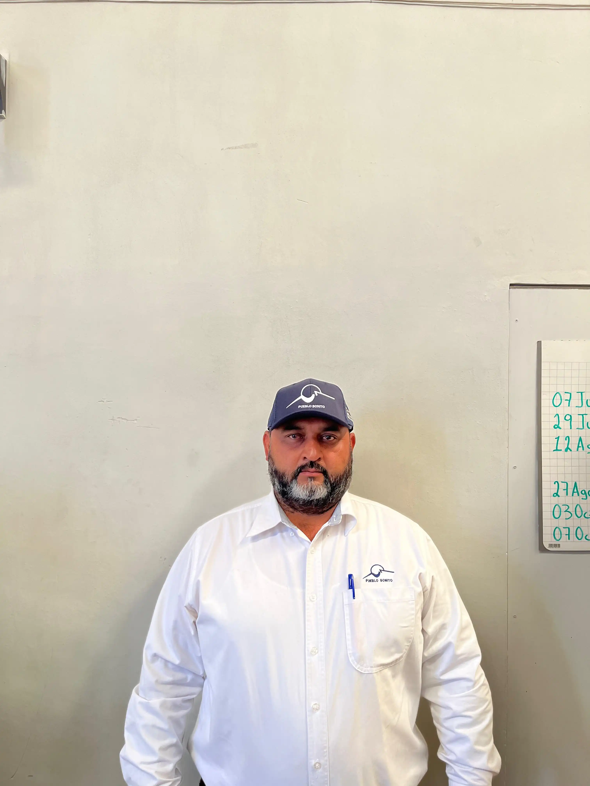
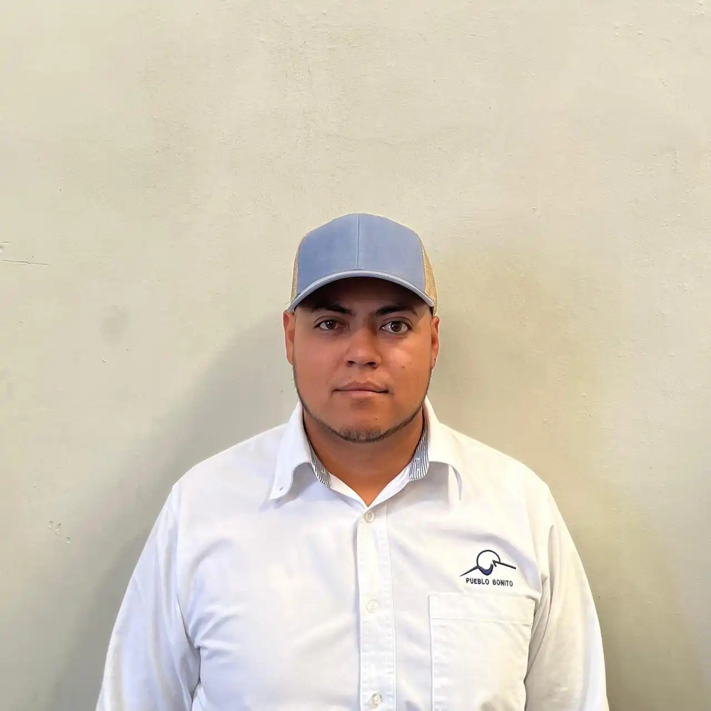

Sucursal Durango
En el corazón de Durango, nuestra sucursal opera de lunes a viernes de 9:00 am a 7:00 pm y sábados de 9:00 am a 2:00 pm. Aquí encontrarás soluciones agropecuarias a la medida, con personal capacitado que te acompaña en cada paso del proceso productivo.
"Tuve un inconveniente con un pedido hace poco, pero me atendieron de inmediato y me solucionaron el problema rápidamente. Las entregas son puntuales, y siempre me han tratado de forma profesional. Los productos, en general, son de buena calidad."
Juan Carlos Pérez
Lo Nuevo de Durango
Lo mejor del sectorIngenieros a tu servicio
En nuestra sucursal de Fresnillo, contamos con un equipo de ingenieros agrónomos altamente capacitados y con amplia experiencia en el sector agropecuario. Están disponibles para brindarte asesoría personalizada y ayudarte a elegir los productos más adecuados para tus necesidades.

Ing.
Ing.
José

Ing.
Gerardo

Ing.